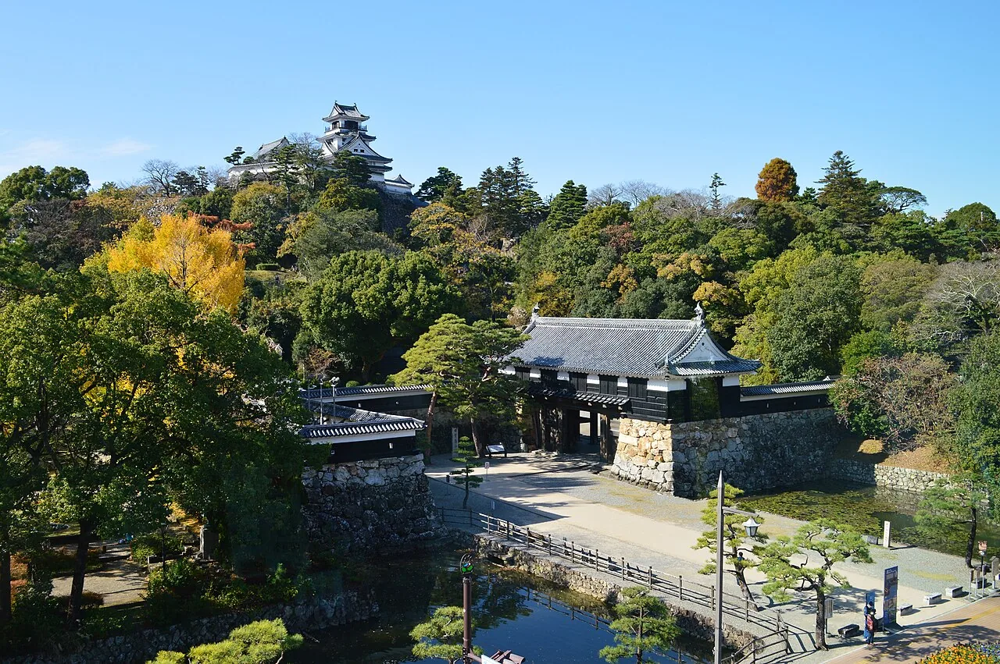

Ripple: the drink Kochi thinks is national
There is a pale brown lactic drink called リープル (Rīpuru, printed on the carton as RIPPLE) that people in Kochi Prefecture drink from childhood, buy in every supermarket, and quietly assume the rest of Japan drinks too. It doesn't. Move to Tokyo and it simply isn't on the shelf. Kochi's own prefectural tourism site ran an article whose headline is essentially "Kochi residents in shock: we thought Ripple was nationwide and it isn't sold outside the prefecture" — which tells you how the discovery usually goes. This guide covers what Ripple actually is, where a visitor can buy it, the room-temperature version that survives a flight home, and five more drinks that are locked to a single Japanese region in the same way.

What Ripple actually is
Ripple is made by Himawari Nyūgyō (ひまわり乳業株式会社, Himawari CO.,LTD.), a dairy in Nankoku City, Kochi Prefecture — the company dates to 1922, with the present corporate entity established in 1946. On Japanese labelling Ripple's product category (種類別, shuruibetsu) is 乳酸菌飲料 — nyūsankin inryō, "lactic acid bacteria beverage" — the same shelf category as Yakult and Calpis, though the three are quite different drinks.
What it tastes like is genuinely hard to pin down, and the maker has not tried very hard to. Asked directly by a Japanese news outlet what flavour Ripple is, the company's answer was effectively that it tastes like Ripple. Japanese writers reach for "yogurt-ish, clean finish" and then start comparing it to other domestic lactic drinks. The colour is a light brown that surprises people expecting Yakult white — that comes from caramel colouring in the recipe.
| Spec | Detail |
|---|---|
| Product category | 乳酸菌飲料 nyūsankin inryō — lactic acid bacteria beverage |
| Non-fat milk solids | 1.2% |
| Main ingredients | Glucose-fructose syrup, sugar, skimmed milk powder; calcium lactate, stabiliser (CMC), flavouring, acidulants (lactic and citric acid), caramel colouring |
| Per 100 ml | 65 kcal · protein 0.4 g · fat 0.1 g · carbohydrate 16.4 g · calcium 55 mg |
| Shelf life | 20 days including production date — refrigerated at or below 10°C |
| Sizes and price | 200 ml ¥105 · 500 ml ¥175 · 1000 ml ¥290 (maker's online shop, tax included) |
That 20-day refrigerated shelf life is the whole reason this drink never left Kochi. A chilled product with a three-week window cannot be trucked economically across Japan and sit in a distant warehouse — the maths only works inside a tight delivery radius. Ripple is not regional because of marketing strategy. It is regional because of refrigeration.
The company's own timeline sets out the history without pinning a launch year. Ripple began in the 1960s at Nankai Nyūgyō, a dairy in Tosa City, sold in 135 ml glass bottles. Nankai merged with Himawari in 1973; glass bottles were dropped for paper cartons in 1980; the corporate name was unified as Himawari Nyūgyō in 1983. In 2009 the national TV programme Himitsu no Kenmin SHOW introduced Ripple to the rest of the country as Kochi's soul drink.
You will see "over 40 years" on the maker's product page and "over 50 years" on the maker's own online shop. Asked by a reporter in 2014, the company said the exact start date is unknown and that its records go back about fifty years. Their official history says only "the 1960s." We follow the company: no launch year is stated here, because the company does not know it.
The name nobody can explain
The carton says RIPPLE in Latin letters. Japanese speakers read it リープル, rī-pu-ru — which is not how you would transliterate the English word "ripple" (that would be リップル, rippuru). So why the long vowel?
Nobody knows, and the maker says so in print. On its own centenary site, Himawari writes that how "RIPPLE" came to be read Rīpuru is "wrapped in mystery." A 2016 food-magazine article offers the theory that it comes from "ripple" meaning small waves, reshaped for how it sounds in Japanese, but the company neither confirms nor denies it. A drink that an entire prefecture has consumed for over half a century, whose name its own manufacturer cannot account for, is a fairly Japanese kind of institution.
Where to buy it in Kochi
Inside Kochi, Ripple is ordinary — Nankoku City's official site simply says it is available at supermarkets and convenience stores across the prefecture. For a visitor, these are the reliable, easy-to-reach options.
| Where | What you get | Access |
|---|---|---|
| Hirome Marketひろめ市場 — Kochi City, Obiyamachi 2-3-1 | A Ripple soft-serve ice cream (¥500) at the stall Hirome no Oku Unagi Matsuri, served in a black bamboo-charcoal cone | 2 min walk from Ōhashi-dōri tram stop. Open 10:00–23:00 (Sundays from 09:00); individual stalls vary |
| Kochi Meihinkan高知銘品館 — inside JR Kochi Station | Bottles of Ripple alongside other Kochi products | Inside the station — the easiest grab before a train |
| Any supermarket or konbini | The standard 200 / 500 / 1000 ml cartons in the chilled case | Prefecture-wide |
| Marugoto Kochiまるごと高知 — Ginza 1-3-13, Tokyo | Kochi's Tokyo antenna shop stocks it — useful if you never reach Shikoku | Ginza, 10:30–19:00. Reported to sell out on some weekends |
Himawari's Nankoku plant (高知県南国市物部272-1) has had a visitor walkway since 1965 — the first factory in Kochi built with one. You watch the carton-filling line from the corridor and get a tasting. Tours run Monday, Wednesday and Thursday, one group per day, roughly 09:00–14:00; go in the morning if you want the line actually running. Admission is free, butter-making costs ¥300, and telephone reservation is required (088-864-5800). We could not confirm whether they can host a tour in English, so ask when you call.
The version you can take home
Standard Ripple is chilled and lasts 20 days, which makes it a poor souvenir. In March 2022 the company solved this with Long Life Ripple (ロングライフ・リープル), a 200 ml carton that keeps at room temperature for 180 days. This is the one to put in a suitcase.
Be precise about what it is, though. Long Life Ripple's product category is not "lactic acid bacteria beverage" but 清涼飲料水 (seiryō inryōsui, "soft drink"), and the maker states plainly that it holds the same taste without containing the lactic acid bacteria. So it is a shelf-stable drink that tastes like Ripple, not preserved Ripple. Per 200 ml carton: 135 kcal and 110 mg calcium.
Yakult is built on a specific strain surviving to the intestine. Himawari publishes no equivalent claim for Ripple: the manufacturing method, whether the drink is fermented, and whether any bacteria in it are live or heat-treated are not stated in its public materials. Plenty of English write-ups of Japanese lactic drinks blur this. We are only reporting what the label and the maker actually say.
If you cannot get to Kochi at all, Himawari's own online shop ships refrigerated nationwide within Japan — so "you can't get Ripple outside Kochi" is a slight exaggeration. What is true is that you will not casually find it on a shelf anywhere else. There is also a spread of spin-offs sold in the prefecture: Ripple jelly, Ripple ice cream, Ripple gummies, a baked Ripple doughnut, a Ripple steamed cake made with the bakery Shikishima, a liqueur developed with the Kochi sake brewer Kikusui, and a merchandise line that runs to keyrings and AirPods cases.
Some links above are affiliate links. We may earn a commission at no extra cost to you. We only list services we'd use ourselves.
For reference, Kochi is reached by air in well under two hours from the main hubs — roughly 1 h 30 from Haneda (about ten flights a day), 45 minutes from Itami, 1 h 45 from Narita on Jetstar — with an airport bus covering the 40 minutes into Kochi Station. By rail from Tokyo it is about six hours: shinkansen to Okayama (around 3 h 15), then the limited express Nanpu across the Seto-Ōhashi bridge and down the Dosan line (around 2 h 35).
Five more prefecture-locked drinks
Ripple is not unique — it is one of a whole class. Japan's regional dairy cooperatives each built a lactic or coffee-milk drink for their own territory, and several never left it. Launch years below are given only where the maker states them.
| Drink | Region | Maker | Launched | Where it's sold |
|---|---|---|---|---|
| Soft Katsugenソフトカツゲン | Hokkaido | Megmilk Snow Brand | Predecessor "Snow Brand Katsugen" 1956; the current Soft Katsugen 1979 | Hokkaido only — reported by national press as a Hokkaido-exclusive lactic drink |
| Shirobara Coffee白バラコーヒー | Tottori | Daisen Dairy Agricultural Co-op | Late 1970s (exact year not published) | Began in Kansai and Chugoku; a Tokyo office opened in 2015. Now found in convenience stores across Kansai, Chugoku and Shikoku |
| Genki Coolゲンキクール | Yaeyama Islands, Okinawa | Yaeyama Genki Nyūgyō, Ishigaki | About ten years after Genki Milk (1963); the exact year is not published | The most locked of the group — Yaeyama Islands only, with shipments off-island essentially via Ishigaki's hometown-tax gift scheme |
| Yogurppeヨーグルッペ | Miyazaki | Nannichi Dairy (Dairy) | 1985 | Southern Kyushu mainly; a separate Hokkaido edition is made by a group company with Hokkaido milk |
| Ai no Scall愛のスコール | Miyazaki (origin) | Nannichi Dairy (Dairy) | April 1972 | Went national — northern Kyushu and Kansai by 1973, Chubu by 1975. Listed here as the counter-example: a local drink that escaped |
Ai no Scall is instructive precisely because it broke out. Once a regional drink achieves national distribution it stops being a discovery and becomes an ordinary supermarket item. The ones still worth travelling for are the ones that never made that jump.
Why Japan has so many of these
Two national brands defined the category early. Calpis launched on 7 July 1919, generally credited as Japan's first lactic drink; its founder Mishima Kaiun developed it after encountering soured milk in Inner Mongolia. Yakult followed from Shirota Minoru's 1930 work on a lactobacillus strain hardy enough to reach the intestine — Lactobacillus casei Shirota — with manufacture and sales beginning in Fukuoka in 1935.
Underneath those two, though, Japan's dairy sector stayed federated: prefecture-level agricultural cooperatives and local dairies each served their own catchment. Many built their own lactic drink, and the chilled supply chain kept it there. Ripple's twenty-day refrigerated window is the constraint in its clearest form. The result is a country where a drink can be a childhood staple for 640,000 people and completely unknown 200 kilometres away.
Kochi makes the pattern especially stark. The prefecture's population was 643,437 at the October 2025 census — its lowest ever, down 48,090 in five years. It also sits near the bottom of Japan's inbound tourism table: 129,480 foreign overnight stays in 2023, 40th of the 47 prefectures. Yet that same year Kochi posted the second-strongest recovery in the country against 2019 figures (135.8%, behind only Tokyo), helped by a scheduled charter route to Taiwan opened in October 2023 — Taiwanese visitors were the largest group at 30,730, about 42.5% of the total.
The Japanese you'll actually use
| Japanese | Reading | Meaning |
|---|---|---|
| リープル | Rīpuru | Ripple — the drink itself |
| 乳酸菌飲料 | nyūsankin inryō | lactic acid bacteria beverage — the label category |
| 清涼飲料水 | seiryō inryōsui | soft drink — the category of the shelf-stable version |
| 種類別 | shuruibetsu | "product category" — the label line that tells you which of the two it is |
| 要冷蔵 | yō-reizō | must be refrigerated — printed on the standard cartons |
| 常温保存 | jōon hozon | room-temperature storage — what makes Long Life Ripple luggage-safe |
| ご当地 | gotōchi | local / regional edition — the concept this whole article is about |
| 工場見学 | kōjō kengaku | factory tour |
| 予約が必要です | yoyaku ga hitsuyō desu | a reservation is required |
Want these to stick? The free JLPT battle quiz drills travel and food vocabulary like this with spaced repetition.
Prefecture-locked products pair well with Japan's other location-bound hunts: manhole cards →, station stamps →, and the michi-no-eki stamp rally →. Planning a Shikoku leg? Start with our free Kochi prefecture guide →.
Common questions
Q. What is Ripple (リープル)?
A. A lactic acid bacteria beverage made by Himawari Nyūgyō in Nankoku City, Kochi Prefecture. It is pale brown, mildly sweet and tart, and is sold essentially only within Kochi, where it is an everyday supermarket item.
Q. When was Ripple launched?
A. The maker does not publish a launch year. Its official history says only that the drink began in the 1960s at Nankai Nyūgyō in 135 ml glass bottles. Asked directly in 2014, the company said the exact start date is unknown. Its own materials variously say "over 40 years" and "over 50 years."
Q. Can I buy Ripple outside Kochi?
A. Not easily in shops. It is stocked at Kochi's Tokyo antenna shop Marugoto Kochi in Ginza, and Himawari's own online shop ships refrigerated within Japan. Outside those routes you will not find it on an ordinary shelf.
Q. Can I take Ripple home on a plane?
A. Take Long Life Ripple (ロングライフ・リープル), a 200 ml carton launched in March 2022 that keeps at room temperature for 180 days. Note that it is labelled as a soft drink rather than a lactic acid bacteria beverage, and the maker states it keeps the taste without containing the lactic acid bacteria.
Q. Why is it called Ripple when it's written RIPPLE?
A. The maker says it does not know. On its centenary site Himawari describes how "RIPPLE" came to be read Rīpuru as wrapped in mystery. A food-magazine article has suggested it derives from "ripple" meaning small waves, but the company does not confirm this.
Q. Is Ripple like Yakult or Calpis?
A. It shares the same Japanese label category as Yakult, but they are different drinks. Himawari does not publish claims about live bacteria surviving to the intestine, and does not state whether Ripple is fermented or whether any bacteria are live or heat-treated. Its non-fat milk solids are 1.2%, and caramel colouring gives it its light brown colour.
Q. Can I visit the factory?
A. Yes. Himawari's Nankoku plant runs free tours on Mondays, Wednesdays and Thursdays, one group per day, roughly 09:00–14:00, with telephone reservation required on 088-864-5800. Go in the morning to see the line running. English-language capability is not stated, so ask when booking.
Q. What other drinks are sold in only one part of Japan?
A. Soft Katsugen in Hokkaido, Shirobara Coffee from Tottori, Genki Cool in Okinawa's Yaeyama Islands, and Yogurppe in southern Kyushu are the best-known. Ai no Scall from Miyazaki began the same way in 1972 but achieved national distribution within a few years.